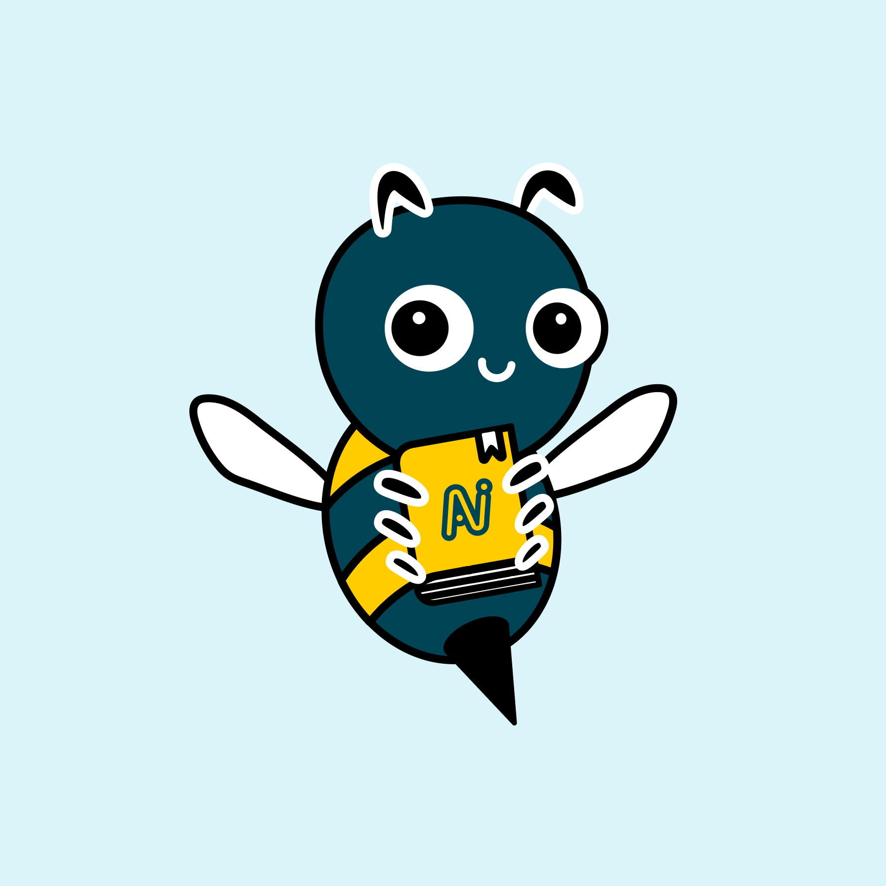

Understand
How Nektar works, from sync behavior and security to key concepts and use cases.


Overview
The Nektar Graph, Readers, Builders, Writers, and Self-healing — how all the pieces fit together.How the Nektar Graph, Readers, Builders, and Writers fit together.

Graph inference
How Nektar's ML models identify missing relationships, de-duplicate records, and connect activities to the right opportunities.How Nektar identifies missing relationships and maps activities to opportunities.
Self healing
How Nektar automatically corrects past decisions as new data arrives — no manual intervention required.How Nektar auto-corrects past decisions as new data arrives.
Security
Infrastructure, data retention, encryption, and compliance — SOC 2 Type II, ISO 27001, and GDPR.SOC 2 Type II, ISO 27001, GDPR — infrastructure and encryption.

Sync latency
Typical end-to-end sync times for contacts, activities, and opportunity-contact roles, and what affects them.Typical sync times and what affects them.
Data transform
Configure how Nektar maps engagement data into your Salesforce fields using transform rules and formulae.Map engagement data into Salesforce fields with transform rules.
Use cases
Ways customers use Nektar Transform to auto-populate engagement scores, multi-threading levels, dates, and more.Auto-populate scores, multi-threading levels, dates, and more.

FAQs
Answers to common questions about activities, contacts, admin controls, and security.Common questions about activities, contacts, admin, and security.